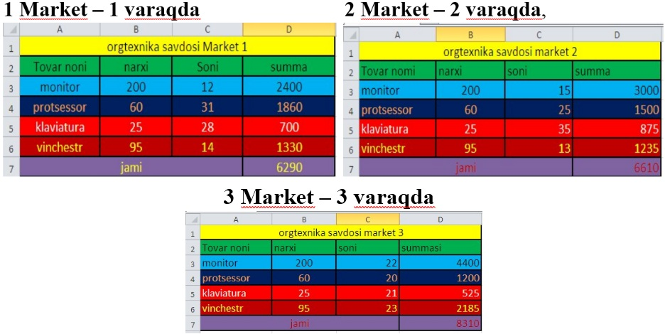

5-DARS. BOSHQA VARAQ YOKI KITOBGA MUROJAAT
MS Excel 2010 ning yana bir qulayliklaridan biri bu, boshqa varaq yoki kitoblarga murojaat qilinib, ulardagi ma’lumotlar bilan bog‘lanish hosil qilish mumkin. Varaq va kitoblarga murojaat qilish usullarini quyidagi mashqlarda ko‘rib o‘tamiz.
1-mashq. Savdo shoxobchalaridagi ma’lumotlarga asoslanib, orgtexnika savdosi firmasi bo‘yicha umumlashtirilgan jadval tuzish.
Bajarish:
har bir savdo shoxobchasi bo‘yicha, masalan

ma’lumotlarni kiritamiz.
4 varaqda umumlashtirilgan ma’lumot hosil qilish uchin B3 katakka =Лист1!B3+Лист2!B3+Лист3!B3 yozuvi hosil qilinadi. Buning uchin B3 da = belgisidan so‘ng 1- varaqdagi B3 katagida sichqonchaning chap tugmasi bosiladi, natijada Лист1!B3, so‘ngra + va 2- varaqdan Лист2!B3 hosil qiluinadi va 4 varaqdagi B4, B5, B6, C3, C4, C5, C6, D3, D4, D5, D6, D4 kataklariga nusxa ko‘chirish, o‘ng past burchagiga sichqonchaning chap tugmasi bosilgan holda hosil qilinadi. Natijada quyidagi oyna hosil bo‘ladi:
2-mashq. O‘quvchilarning fanlardan olgan baholarini kitoblarning jadvallari yordamida hosil qilish.
Bajarish:
o‘quvchilarning fanlardan olgan baholarini kitob jadvalida bog‘lanish hosil qilish uchun har bir fan bo‘yicha o‘quchilarning baholari alohida ishchi kitoblarda hosil qilinadi (matematika, fizika, Informatika):

ushbu uchta jadvalni o‘quchilar baholarini aks ettiradigan alohida umumiy fanlar ishchi kitobda umumiy jadval hosil qilinadi:
alohida fan (umumiy fanlar jadvali fayli) kiritilgan ishchi kitob ochilib, baholar kiritilgan kataklar belgilanib nusxalanadi (Копировать). Umumiy ishchi kitobdagi mos fan kataklari belgilanib, Maxsus qo‘yish (Специальная вставка) bo‘limi tanlanib, bog‘lanishni qo‘yish (Вставить связь) tugmasi bosiladi:
Natijada quyidagicha bog‘lanish hosil bo‘ladi:
barcha ishchi kitoblar o‘rtasida bog‘lanishlar hosil qilingandan so‘ng, bog‘lanishlar hosil qilingan ishchi kitob menyular satridan Данные bo‘limi tanlanib, Подключения – изменить связи ketma-ketligi tanlanadi:
hosil bo‘lgan oynadan Обновить tugmasi tanlanib, ishni tugatish uchun Закрыть tugmasi tanlanib oynadan chiqiladi.

1. Varaqlarni bog‘lash usullarini tushuntirib bering?
2. Kitoblarni bog‘lash usullarini tushuntirib bering?
3. 10- sinf o‘quvchilarning barcha fanlardan olgan baholarini alohida jadvallar hosil qiling va ularni bitta jadvalga birlashtiring.

1. Uchunchi varaqning B4 katagida birinchi varaqning C3 katakdagi va ikkinchi varaqning D6 katakdagi sonlarning yig‘indisini hisoblang.
2. O‘quvchilarning tarix, kimyo, fizika va matematika fanlardan olgan baholarini alohida fayllarga saqlang va uni “Umumiy” nomli faylga birlashtiring.